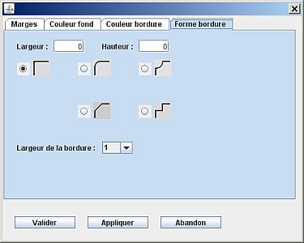

Boutons - Marges - Couleur fond - Couleur bordure - Forme bordure
Pour changer la présentation d'une étiquette, il faut la sélectionner. Ne sélectionner pas plusieurs étiquettes, il n'est pas prévu de modifier plusieurs étiquettes en même temps.
Quand vous avez sélectionné l'étiquette, cliquez sur le bouton  .
.
GénéGraphe ouvre une fenêtre :

Les onglets permettent de choisir différentes possibilités de modification de l'étiquette.
Le bouton Valider permet d'appliquer à l'étiquette toutes les modifications demandées dans tous les onglets et ferme la fenêtre.
Le bouton Appliquer modifie l'étiquette avec toutes les modifications demandées dans tous les onglets. Cela permet de visualiser l'effet de ce que vous avez demandé. Vous pouvez continuer à modifier des valeurs dans cette fenêtre. Si vous cliquez sur Abandon, l'étiquette retrouve son état avant l'ouverture de cette fenêtre. Si vous cliquez sur Valider, l'étiquette sera modifiée avec toutes les valeurs choisies.
Le bouton Abandon permet de fermer la fenêtre sans qu'aucune modification ne soit appliquée à l'étiquette. Si vous aviez cliqué sur Appliquer, ces modifications sont annulées. L'étiquette retrouve l'état qu'elle avait avant d'appeler cette fenêtre.
Vous pouvez choisir les marges entre le texte et la bordure de l'étiquette. Les valeurs sont exprimées en pixels.

Vous choisissez la couleur du fond de l'étiquette.
Vous choisissez la couleur de la bordure de l'étiquette.

Vous pouvez choisir une des quatre formes à appliquer aux angles de l'étiquette. Vous pouvez saisir la largeur et la hauteur de la forme de l'angle. Enfin, un menu déroulant permet de choisir l'épaisseur de la bordure de l'étiquette.